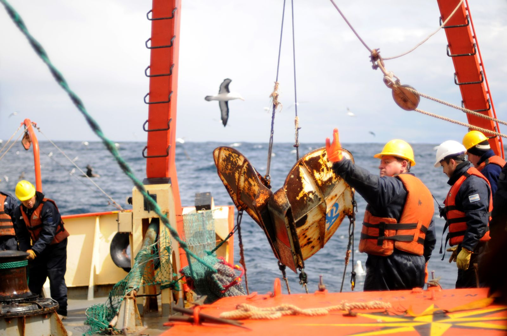

Entry 03 — About & method
The ecologist, and how the work runs
Dr Tomás Ribeiro
Tomás Ribeiro came to vent ecology by the usual improbable route: a first degree in marine biology, a doctorate on the ecology of Mid-Atlantic vent mussel beds, and a postdoctoral season that put her in a submersible for the first time and rearranged her priorities permanently. Fourteen field seasons later, the practice she runs from Bergen does one thing: vent-field survey and sampling, planned conservatively and reported plainly.
Her standing argument with the field is about paperwork. A sample without a defensible chain of position, time and method is a souvenir, and a cruise report that hides its weather losses teaches the next cruise nothing. The log discipline on this site — entries, registers, printed figures — is not a style. It is the practice's actual paperwork, shown in public.
“I would rather bring up twelve samples I can defend than forty I cannot. The ocean keeps the other twenty-eight either way — it does not need my help losing them.”
Training & standing, stated plainly: doctorate in marine ecology (vent community ecology); fourteen seasons on mid-ocean ridge cruises in science-party and science-lead roles; submersible and ROV survey operations on both crewed and uncrewed programmes; sampling under institutional permits and the environmental protocols of the relevant national programmes; sample-archive curation to museum standard. The practice carries no authority it has not listed here.

Entry 03, continued — The working page
How a cruise runs, in order
The order is not negotiable, and it is the same on every programme this practice leads. Skip a step and the later steps quietly stop meaning anything.
Multibeam first
The ship maps the field from the surface before anything goes down. Bathymetry decides where the dives can work, where the ground is new since the last chart, and — on a resurvey — what the eruption, the slumping or the years have already changed. No dive plan is written before the map exists.
Dive plans written against the clock
Each dive is planned from the printed figures on the practice page: the window, the transit, the bottom time that remains, and the work that honestly fits inside it — in priority order, with the cuts decided on paper the night before, not argued over the intercom at depth.
Sampling under permit, minimal impact
Vent fields are small, slow-growing and, in several regions, formally protected. Sampling is done under the permits of the sponsoring institutions and the environmental protocols that apply to the site: take what the analysis needs, photograph before touching, leave the quadrat markers and the place itself as undisturbed as the work allows. A vent field is a place, not a backdrop.
The nightly re-plan
Every evening: what the day returned, what the weather is doing, what tomorrow's dive must protect. The plan a cruise finishes with is rarely the plan it started with, and the log records both — which is why the cruise reports on this site can say what was dropped, and when, and by whom.
Archive before analysis
Samples are logged, split and archived on the ship, with position, depth, time and method attached to each one. Analysis begins only when the archive is complete — because the sample you cannot place is the sample you cannot publish, however interesting it looks in the tray.
The report, on the stated date
The cruise report is delivered on the date agreed before sailing: what was asked, what was done, what came back, and what the gaps are. Data and imagery are delivered with it, in the formats your programme specified, with the archive catalogue as the index.
Entry 03, continued — The honesty page
What this site will not tell you
That the deep ocean is known. It is not. Most of the ocean floor has never been visited, imaged or sampled, and most vent fields that exist have never been found. A first survey is a beginning with error bars, and this practice writes it that way.
That a photograph here shows a vent. Genuine vent photography belongs to the institutions that took it and is not stock imagery. This site therefore uses reference photographs of ships, decks and water — captioned as reference — and draws its one diagram. Any site that shows you a smoker chimney should be able to tell you whose camera took it.
That the estimate is a quote. The figures on the practice page are planning rates, printed so you can test the arithmetic. A quote for a real programme follows the field, the vessel and the season — and usually moves most on the line nobody controls: the charter market.
That every cruise succeeds. Two of the three cruises in this log were cut, moved or re-scoped by events, and the third one's headline is how much was left undone. That is not a confession; at 2,500 metres, in weather, it is the normal shape of the work — and a practice that only publishes its good cruises is telling you something about its reports.
Entry 03, continued — Terms
Engagement terms
Table — engagement terms · scrolls sideways on small screens
| Term | As practised |
|---|---|
| Lead time | Cruises are planned 12–24 months out — vessel time is allocated by institutes on that cycle, and a vent programme that starts later starts weaker. Shore-based work (mapping from existing footage, analysis, reporting) can usually begin within a quarter. |
| Basis of fees | Science-team days at the printed day rate; vessel time passed through at cost under your institute's charter; analysis per sample; reporting fixed. Rates are printed on the practice page and do not change between the estimate and the agreement without a written reason. |
| Booking & deposit | A cruise engagement is confirmed with a signed agreement and a deposit of 25% of the science-team and reporting fees. Vessel charter terms are your institute's own and are never held by this practice. |
| Weather & lost days | Ship days lost to weather are charter days and are charged by the vessel's terms, not this practice's; science-team days are charged only for days embarked. The re-planning work that weather causes is part of the service, not an extra. |
| Data & samples | All data, imagery and samples belong to the commissioning institution from the moment they exist. The practice retains the archive catalogue and the right to describe the cruise in general terms — as it does in the log on this site — with client-identifying detail only by agreement. |
| Permits & protocols | Sampling proceeds only under the permits and site protocols in force for the field in question. If a permit does not cover a requested sample, the sample is not taken, and the report says why. |